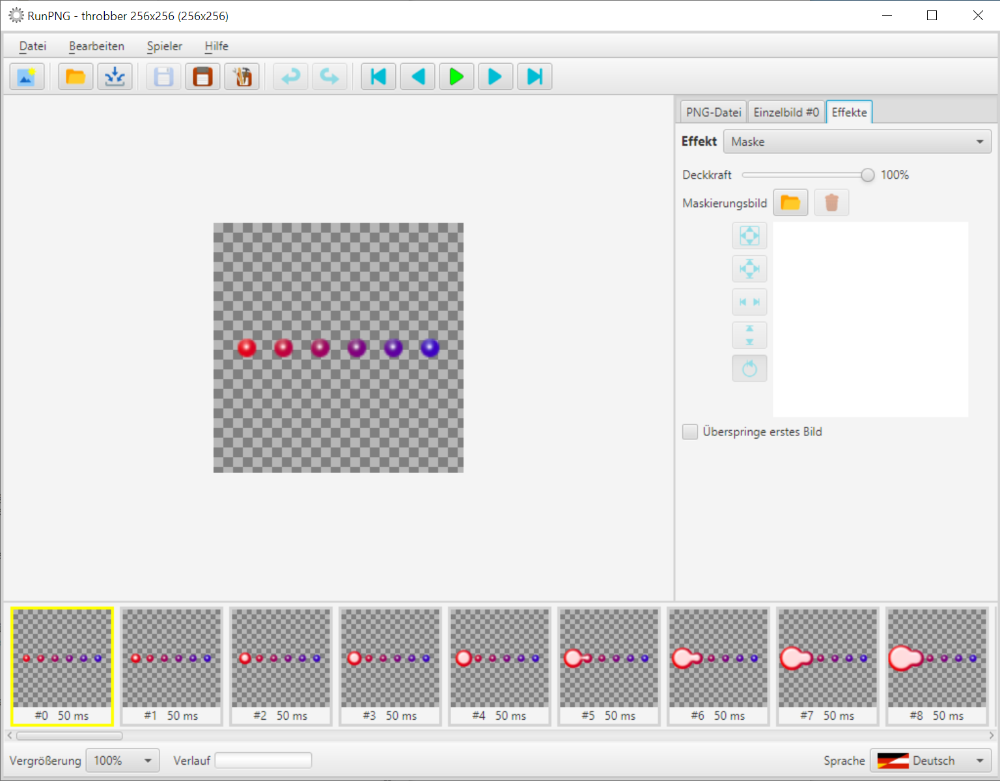
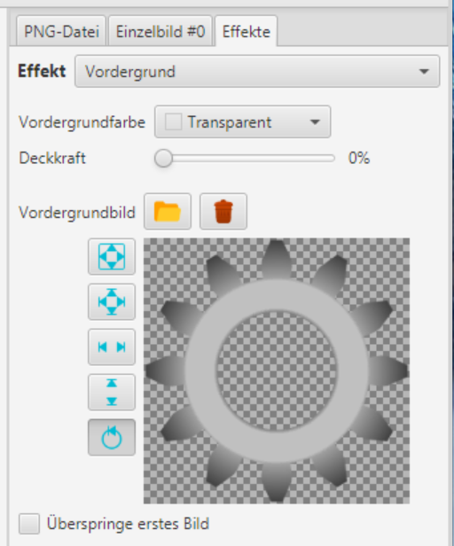
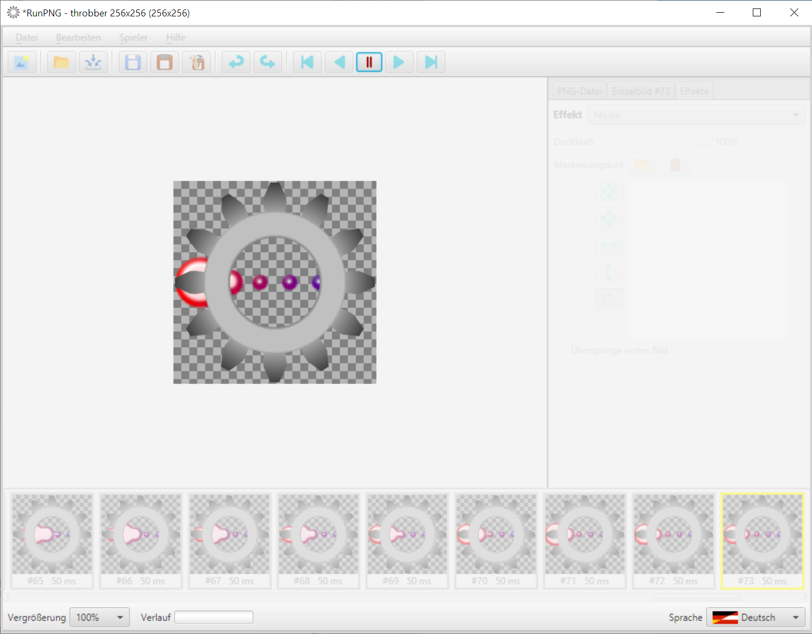
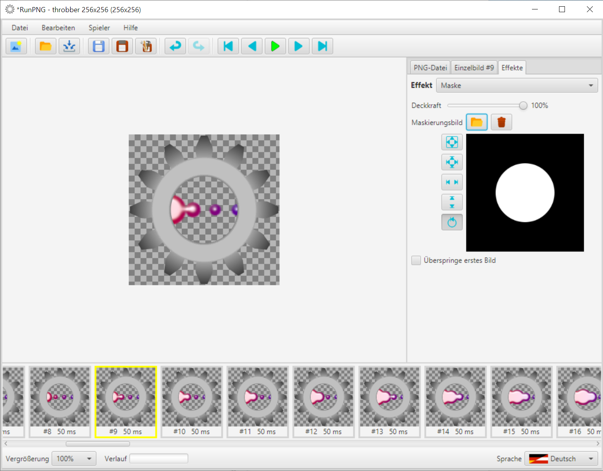

Maske
Wie bereits an anderer Stelle erwähnt ist der Maske-Effekt etwas Ähnliches wie die Ebenenmaske in einem Grafikeditor. Dabei handelt es sich um eine Maskierung der Grafik mit einem Graustufenbild. Wobei die Farbe Weiß volle Darstellung bedeutet und Schwarz völlige Transparenz. Die Nuancen dazwischen lassen die Grafik stärker oder schwächer durchscheinen.
Gegenstand der Maskenanwendung soll die APNG-Datei RunPNG/doc/samples/various/throbber 256x256.png sein. Die laden wir in RunPNG (es sind 80 Einzelbilder). Dann wählen wir unter dem Tabulator Effekte den Effekt Maske aus.
Anders als die Bildkästen bei den anderen Effekten hat der Kasten für den Maskeneffekt keinen transparenten Hintergrund, sondern einen Weißen. In dem Bildkasten sind keine Transparenzen möglich. Außerdem gibt es keine Farbauswahl. Nur einen Schieberegler mit dem man die Deckkraft verstärken oder reduzieren kann. Wobei sich der Begriff Deckkraft hier auf die geladene Grafik selbst bezieht. Wird der Deckkraft-Schieberegler nach 0% verschoben dann ist der Hintergrund im Bildkasten Schwarz und die Grafik unsichtbar. Bei 50% bekommt man zwar eine sichtbare Grafik, aber sie ist stark durchscheinend.
Damit wäre der Anwendungszweck der vollflächigen Maske auch schon erklärt. Und warum die Fläche im Bildkasten standardmäßig Weiß ist. Eine Änderung wirkt sich direkt auf die geladene Grafik aus und macht sie durchscheinend. Was vor einem entsprechenden Hintergrund auf einer Internet-Seite interessante Effekte ermöglicht. Doch stellen wir den Deckkraft-Schieberegler wieder auf 100% und machen einen kurzen Ausflug zum Vordergrund-Effekt.
Beim Vordergrund-Effekt laden wir die Datei RunPNG/doc/samples/various/Sprocket 3.png in den Bildkasten und kehren wieder zum Maske-Effekt zurück. Nun kann sich die Animation hinter dem Zahnrad austoben. Doch wenn man den Spieler startet dann büchst die Animation links und rechts neben dem Zahnrad aus.
Das wollen wir aber nicht. Wir wollen die Darstellung der Animation auf das Loch in der Mitte des Zahnrades beschränken. Also halten wir den Spieler an und laden die Maske RunPNG/doc/samples/various/Mask 3.png in den Bildkasten des Maske-Effektes.
Und schon ist Schluss mit dem Ausbüchsen. Das Bild für die Maske folgt natürlich den gleichen Regeln wie die Einstellung mit dem Deckkraft-Schieberegler. Weiß ist volle Deckkraft, Schwarz ist volle Transparenz. Wobei sich das nicht auf knalliges Schwarzweiß beschränken muss. Es werden z. B. auch Gradienten mit Graustufen befolgt. Auf diese Art lassen sich interessante Animationen ausstanzen.
Hinweis: Bei Verwendung von einem vollflächigen Maskenbild hat der Schieberegler keine Wirkung mehr. Es sei denn, die Maske hätte transparente Flächen. Nur so eine Idee.